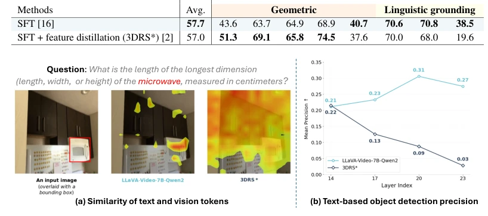
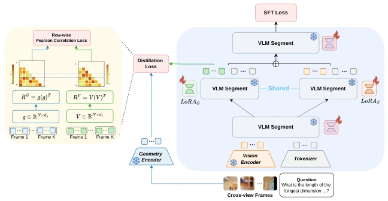
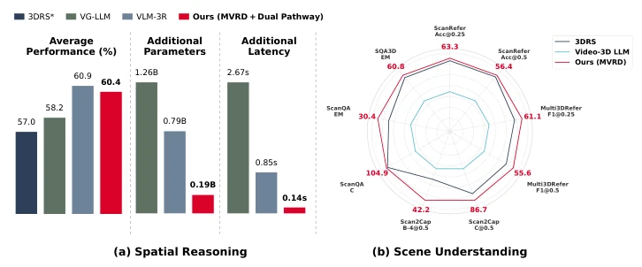
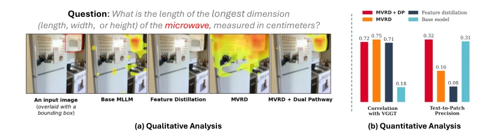
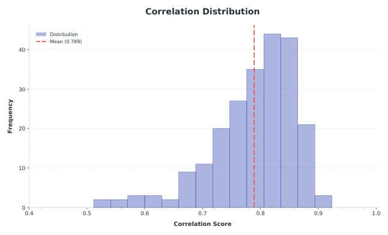

This paper accomplishes something commendable: keenly identifying that directly distilling geometric features will 'undermine' the language alignment capability of VLMs, causing tasks such as object order tracking to collapse. The authors did not resort to stacking large models, but distilled 'relations' rather than 'features', akin to teaching students to memorize formulas instead of answers. MVRD significantly outperforms SFT and feature distillation on VSI-Bench, approaching feature fusion methods but with far fewer parameters. However, although Dual Pathway is stable, the selection of the additional adapter layers is somewhat heuristic, and it relies on a large teacher like VGGT; whether the distillation process itself introduces new biases remains to be seen. Overall, this is a 'minimally invasive surgery' in Embodied AI spatial reasoning, better than a 'craniotomy', but whether it can fundamentally cure 'geometric reasoning deficits' depends on future work.
Current VLMs exhibit fragile spatial reasoning capabilities in embodied AI and robotic applications, with visual representations being geometrically fragmented [17], leading to failures even in simple distance inference. Existing solutions either fine-tune spatial QA via SFT, which treats symptoms rather than the root cause and fails to address spurious representations [21-23]; or fuse features from large geometric models (e.g., VLM-3R [1]), causing a drastic increase in model volume during inference, making it unsuitable for edge-side deployment. Although knowledge distillation is lightweight, 3DRS [2] directly aligning features destroys pre-trained visual-language alignment, causing language grounding tasks such as object order tracking to collapse. This paper aims to address how to distill geometric knowledge without sacrificing the VLM's original semantic alignment capability, balancing geometric accuracy and semantic understanding.

Figure 2: Failure of feature distillation. (a) Qualitative: At layer 20, 3DRS* fails to align microwave with the corresponding visual patches, unlike the base model LLaVA-Video-7B-Qwen2. (b) Quantitative: A sharp drop in text-based object-detection precision across layers indicates severe degradation in vision-language alignment.
The core is Multi-View Relational Distillation (MVRD). In the pipeline, the VLM receives multi-view images, the Teacher model (VGGT) provides geometric features, and the Teacher is frozen. The innovation lies in the distillation target: instead of matching feature vectors themselves, it distills the cross-view patch-wise cosine similarity matrix. This way, geometric correspondences are transmitted, but the student feature space is not uniquely determined, allowing it to remain near the pre-trained space and avoiding semantic drift. The Loss adopts the row-wise Pearson correlation coefficient rather than MSE, enhancing robustness. Architecturally, Dual Pathway is introduced, splitting LoRA into geometric and semantic two paths, which merge at intermediate layers, further decoupling geometric learning and semantic preservation, reducing parameter drift. Additionally, through causal masking and diagonal zeroing processing, the accuracy of relation learning is ensured. The VLM only fine-tunes LoRA and projection layers, while the rest are frozen.

Figure 3: An overview of multi-view relational distillation loss and dual pathway.
Tested on the VSI-Bench and ScanNet series datasets (ScanRefer, Multi3DRefer, Scan2Cap, etc.). Baselines include SFT, feature distillation (3DRS [2]), and feature fusion (VLM-3R [1]). MVRD achieves an average accuracy of 59.9% on VSI-Bench, significantly outperforming SFT and 3DRS, and the Dual Pathway version approaches VLM-3R but with parameters only 25% of its size, resulting in lower latency. Ablation experiments show that selecting the distillation layer at a deeper layer (L20) yields the best results, and Dual Pathway effectively alleviates alignment collapse. In 3D scene understanding tasks, MVRD also achieved new SOTA among methods without extra encoders, proving its generalization capability. The experiments also verified the robustness of different VLM backbone networks.

Figure 1: Multi-view relational distillation (MVRD). (a) Spatial reasoning. MVRD with Dual Pathway variant approaches the feature fusion method VLM-3R [1], using the same backbone and dataset, with far fewer added parameters and lower latency. (b) Scene understanding. MVRD transfers to scene understanding, surpassing the prior state-of-the-art 3DRS [2] in all tasks.
其他图片Other Figures

Figure 4: Vision-language alignment across methods. (a) At distillation layer, MVRD and MVRD + Dual Pathway align microwave with its visual patches better than feature distillation. (b) Both improve vision-language alignment while matching feature distillation in geometric relation modeling.

Figure 5: Row-wise Correlation of cosine distance from VGGT with 3D Euclidean distance on ScanNet validation set.